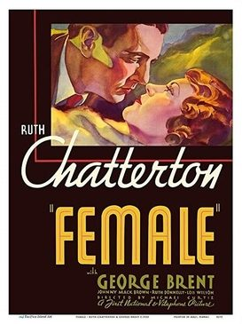

Female
Studio: First National Pictures
Starring: Ruth Chatterton, George Brent, Douglass Dumbrille
Director: Michael Curtiz, William Dieterle, William A. Wellman
Writer: Donald Henderson Clarke
Producer: Robert Presnell Sr
Female is a 1933 American pre-Code romantic drama film directed by Michael Curtiz and starring Ruth Chatterton and George Brent. It is based on the 1933 novel of the same name by Donald Henderson Clarke.
Trivia
- Based on Female (1933 novel by Donald Henderson Clarke).
- William Dieterle began it, and William Wellman took over to complete it when Dieterle became ill.
- Curtiz ended up with the sole screen credit.
Filming Locations
- California
- The film, which cost between $260,000 and $286,000 to make, and brought in $451,000 worldwide, was made at Warners' Burbank studios, with exterior shots of Chatterton's house filmed at Frank Lloyd Wright's Ennis House in the Hollywood Hills.
Previous Showings
4 Runs • 3 Festivals
All runs on record (4):
- October 1 - 4, 1994w/ Gold Diggers of 1933
- March 12 - 13, 2003Film Noir and Pre-Codew/ Night Nurse
- August 16 - 19, 2008Summer 2008 Bette Davis, James Stewart, silent films and more!w/ My Man Godfrey
- September 7 - 9, 2016Summer 2016w/ Dodsworth